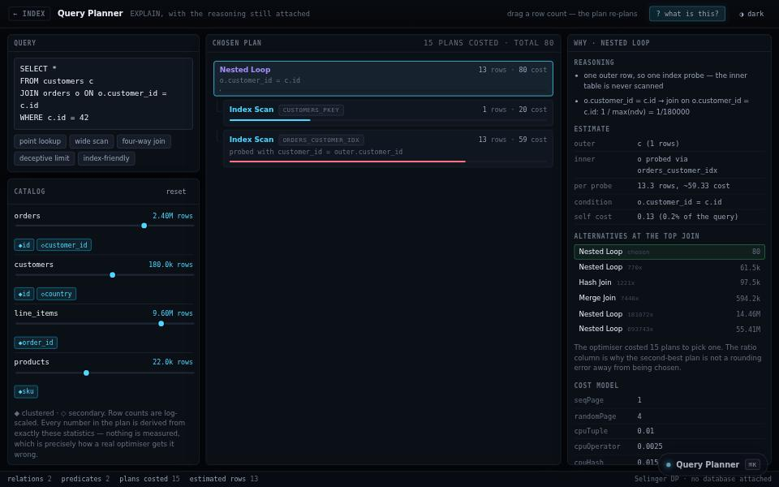

engineering tool · about 6 min · The Engine Rooms
Query Planner
A database deciding how to answer a question, with its reasoning attached. Drag a table’s size and watch it change its mind.

The problem
Why a database chose a slow plan hides behind EXPLAIN output nobody reads.
What it does
- A query plan with its reasoning attached
- Drag a table’s size and watch the plan change
- Shows where an index stops being worth it
The most interesting decision
The bug that justifies showing the workings
An early version ignored every filter by looking up aliases in a catalogue filed by table name. The plans still looked plausible; only a test asserting an exact estimate caught it.
Built with
- Cost model
- Join ordering
- Index selection
- Plans with reasons
Evidence
Drag a table’s size and watch the planner change its mind. Read its tests
Its world
A tree of operators growing down into its tables.